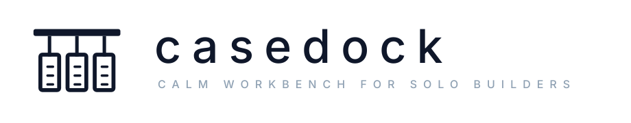

Casedock to spokojny workspace dla solo developerów i knowledge workerów. Znak łączy dock/workbench z trzema Case’ami: jedno główne skupienie + dwa poboczne obszary pracy.
Kolory
Użycie
- Pełne logo poziome: header, landing page, ekrany logowania.
- Symbol: favicon, app icon, sidebar, launcher.
- Jasna wersja: na białym lub ciepłym tle.
- Ciemna wersja: na granatowym tle.
Zasady
- Zachowuj pole ochronne.
- Nie rozciągaj, nie obracaj i nie dodawaj efektów.
- Nie używaj jaskrawych kolorów ani gradientów.
- Preferuj SVG w aplikacji.